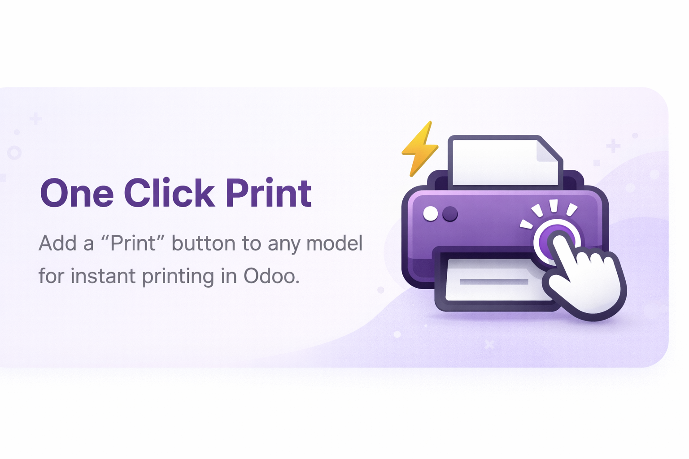

1. Configura tus Impresoras
Dirígete a la configuración del módulo y añade las impresoras de tu red o locales. El sistema validará su conexión para que todo esté listo en un par de clics.
Imprime reportes directamente en impresoras configuradas sin descargar el PDF. ¡Ahorra tiempo y optimiza tus flujos de trabajo!

Configura múltiples impresoras locales o de red de forma centralizada.
Asigna impresoras por defecto a usuarios concretos y reportes específicos.
Lanza impresiones de forma automática al validar ventas, albaranes de entrega, facturas, etc.
Dirígete a la configuración del módulo y añade las impresoras de tu red o locales. El sistema validará su conexión para que todo esté listo en un par de clics.

Define qué impresora debe usarse para cada tipo de documento (Facturas, Albaranes, Pedidos) o asígnalas directamente por usuario para enviar todos sus trabajos a la impresora deseada.

Confirma una orden de venta, liquida un punto de venta (TPV) o valida un albarán. El PDF nunca pasará por tu carpeta de descargas: Odoo lo enviará silenciosamente a tu impresora configurada.
En HIGA te ofrecemos soporte para la instalación o customización de este módulo según las necesidades de tu empresa.
Contactar Soporte